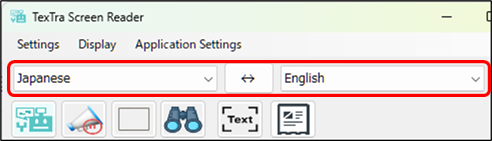
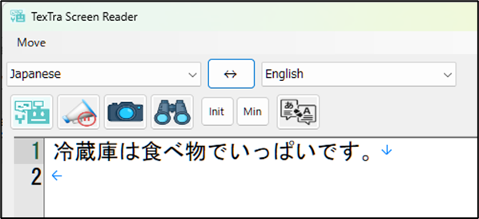

Translation
Please select the translation language.

Using "the frame
window", select the text on the screen you want to translate,
then
click the Translate button.

※ The text recognition
(OCR) and text-to-speech features use Windows functionality.
If the specified language is not installed in
Windows,
these features will not be available.
To add a supported language, please check your Windows
settings.
* Making the target text appear larger will
improve the success rate of OCR recognition.
You can also manually enter text and perform
translation.